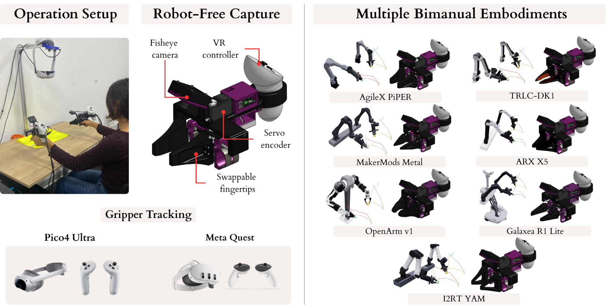
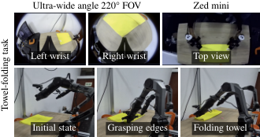
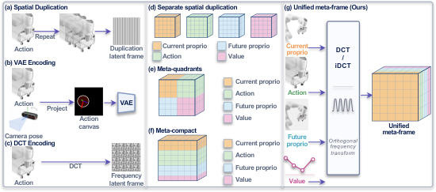
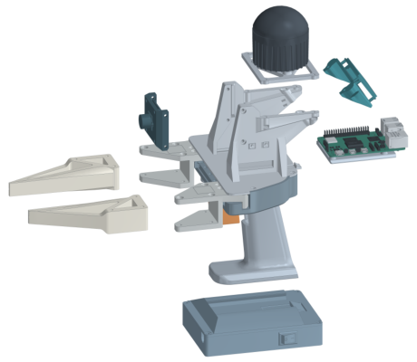
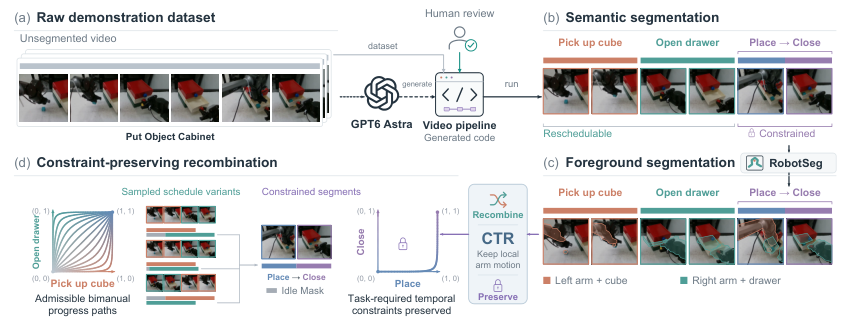
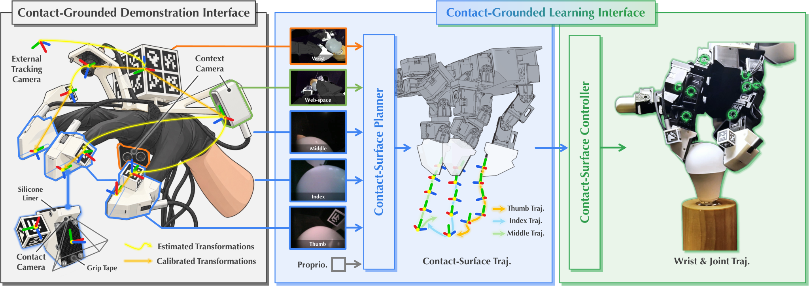

目录 · 6 节
1用机器人遥操作采示范，现场就得有机械臂；HandUMI 把夹爪戴在手上录2机器人保留自己的夹爪，采集端只换指尖3同一批记录怎么转到七种臂4562 条示范是怎么留下来的5真实 PiPER 上，叠毛巾练出了什么6跨臂还停在模拟里，真实只做过这一次任务用机器人遥操作采示范，现场就得有机械臂；HandUMI 把夹爪戴在手上录
要用 leader 臂、复刻臂或 VR（虚拟现实）手柄做遥操作，每条示范都得有机器人在场。
另一条路是先不把机器人放进采集回路：人戴着接口做动作，记录再映射到目标臂上。UMI（一种无机器人采集接口）这类无机器人接口把采集和臂的运动学拆开了，但接触几何或开口运动对不上时，迁移仍可能受阻。最接近的开源方案是 YUBI（同样用手柄追踪、编码器测开口的开源接口），同样用 Quest 手柄追踪、用编码器测开口。HandUMI 做了另一套选择：把平移的平行夹爪戴在手上，指尖做成和目标机器人现装夹爪一样，机器人自己的夹爪不必拆掉改装。作者明确不做与 YUBI 的直接对比。
这篇论文来自 Mu Robotics、McGill University、Mila - Quebec AI Institute、Pontificia Universidad Católica del Perú（PUCP）、NONHUMAN、Technical University of Munich（TUM）和 Universidad Peruana de Ciencias Aplicadas（UPC）。软硬件以 Apache-2.0 开源。一对零件成本 207.11 美元，配上共用的 Quest 3S 是 557 美元，不含可选的 ZED（一款深度相机） Mini、主机、税和运费。全部实验用的是 PICO（一款头显） 4 Ultra。
同一批不绑定某台臂关节的记录，用逆运动学（IK）转到七种模拟双臂：位置误差的中位数不超过 1.2 mm，被拒绝的条目不超过 4.7%。在真实 AgileX PiPER 双臂叠毛巾任务上，只用这批重定向后的数据训练，ACT（动作分块变换器）在 20 次无辅助尝试里成功 12 次，微调后的 π₀.₅ 成功 7 次。
无机器人采集的示范可以经模拟 IK 转到多种臂，并在真实 PiPER 叠毛巾上训练出能对折的策略；跨臂证据只到模拟，真实实验只有这一个任务、一套布置和一个随机种子。
机器人保留自己的夹爪，采集端只换指尖

HandUMI 的佩戴本体上，模块化安装允许更换指尖、手柄类型和相机。打印的手指托架经曲柄驱动一对平移的平行夹爪。开口由 Feetech STS3215 的 12 位编码器经两点标定来测；腕部相机是 IMX335（一款图像传感器）鱼眼，分辨率为 1280×960、30 帧/秒，还可以选装 ZED Mini 看工作空间。
可换的指尖目前能对上 AgileX PiPER、ARX（一种机械臂） X5、TRLC-DK1 用的 Dream Gripper、Trossen WidowX AI，以及 UMI 软指。机器人执行时仍用自己装好的夹爪；新夹爪则需要新的采集指尖。接触几何仍然依赖具体本体。与 YUBI 相比，作者列出三点不同：机器人保留自己的夹爪，而不是改装成 YUBI 的夹爪；这里的夹爪是平移的，YUBI 记录的是夹爪角并按转动手指建模；这里的指尖仿现装夹爪，YUBI 的论文只描述一种手指设计。这是设计选择上的差异，不是一篇对比实验。
位姿不是靠腕部相机做 SLAM（同步定位与地图构建），而是由可更换的供应器提供带时间戳的六自由度手柄位姿。Quest 3 或 Quest 3S 走一套新的 TCP 应用，实现的是 YUBI Apache-2.0 软件的协议，并参考了它的客户端 APK（安卓应用包）；PICO 4 Ultra 走 XRoboToolkit。桌面上的 ChArUco 板定义桌面坐标系。工作站的单调时钟给所有源打时间戳；每一行的目标是落在实时之后 40 ms，并取最近的相机（30 fps）和编码器（100 Hz）样本，新鲜度门限是 60 ms。某个传感器缺失超过 1 秒，整条示范会被丢掉。录制可用语音，也可用双手同时挤压。
标定是有门控的，覆盖夹爪行程、内参（平均重投影误差不超过 0.8 像素）、相机安装与桌面系（RMS 不超过 8 mm），以及每个指尖的工具中心点（TCP）枢轴拟合（RMS 小于 5 mm，最大样本残差小于 10 mm）。另有一套引导触碰协议：两指尖要碰到同一参考点（间距限 15 mm）和桌面（高度 ±15 mm），默认每个位置采 20 个样本；没有结果能绑定到受影响的场次。SHA-256 指纹用来标识配置，不代表精度。
同一批记录怎么转到七种臂
保存下来的是与机器人无关的记录：LeRobot v3 格式里存的是两个手柄的六自由度位姿和开口宽度，并不依赖某台臂的关节。桌面坐标系由 ChArUco 板定义；每个指尖的工具中心点（TCP）来自枢轴拟合。配置文件再提供各臂的运动学、限位，以及这些标定得到的 TCP，还有一条线性夹爪映射——把 0–66 mm 映到 PiPER 的行程上；速度和力并不匹配。
PyRoki 依据这些目标位姿做 IK，把无机器人记录转成各臂的关节数据，从而为七种双臂生成关节指令：PiPER、OpenArm v1、TRLC-DK1、I2RT（机械臂系列） YAM（一种机械臂）、MakerMods Metal Arm、Galaxea R1 Lite 和 ARX X5。后文 Table 3 的毫米级位置误差，衡量的就是这条 IK 重定向在模拟里对目标位姿的跟踪。按机器人筛选 IK 误差、自碰撞和基座关节摆幅。PiPER 与 OpenArm 的回放，与 MuJoCo 共用映射、IK 和平滑。 Hoot 说

200、80、280 毫米是示意，用来看手柄原点和指尖目标差在哪。1.17 mm 是论文 Table 3 里 PiPER 位置误差的中位数。采集端用枢轴拟合得到指尖 TCP，配置文件也提供 TCP；本图不把两端写成已经证明为同一份标定。
出处
手柄位姿与开口、桌面系、指尖 TCP 枢轴拟合、配置文件中的运动学/限位/TCP，以及 PyRoki IK，见论文 §2。Table 3 中 PiPER 位置误差中位数 1.17 mm 见 §3.1。200+80=280 为示意，不是论文实验数字。论文的 Table 3 把保留的 562 条和丢掉的 79 条，都在这七种模拟臂上回放；Metal 只跑了那 79 条，因为中途计算故障。位置误差取中位数，如下表。摘要里「中位位置误差不超过 1.2 mm」，对应的是这里最高的中位数，也就是 PiPER 的 1.17 mm。
| 模拟臂 | 位置误差中位数（mm） | 拒绝（%） | 自碰撞（%） | 关节限位（%） |
|---|---|---|---|---|
| PiPER | 1.17 | 0.0 | 0.0 | 0.1 |
| OpenArm | 0.14 | 4.7 | 0.0 | 27.5 |
| TRLC-DK1 | 0.18 | 3.1 | 2.7 | 2.3 |
| YAM | 0.19 | 0.8 | 0.0 | 4.7 |
| Metal | 0.09 | 0.0 | 0.0 | 0.4 |
| R1 Lite | 0.03 | 0.0 | 16.4 | 0.0 |
| ARX X5 | 0.09 | 0.0 | 0.0 | 0.1 |
一条会被拒绝，如果起始不可达，或位置误差的第 99 百分位超过 3 cm，因此摘要里「不超过 4.7% 的条目被拒绝」取的是各臂拒绝率的上限，也就是 OpenArm。最多有 22.9% 的条目超过 URDF（机器人描述格式）速度限制，发生在 OpenArm 上；OpenArm 是 7 自由度，其余是 6 自由度。这些数字说明的是模拟里的运动学重定向，不是真实接触。
PiPER 用的是实验室桌面；其他臂的摆放是超参数，不是留出集——OpenArm 和 ARX X5 在 19 条上扫描、10 条上评估。这些数字检验的是运动学重定向，不是真实接触。PiPER 指尖采集的数据同样只检验运动学；PiPER 的旋转残差会进入后面的策略训练，影响未知。
562 条示范是怎么留下来的
三名操作者都是作者，其中一人先前用过这套装置。他们戴着 PICO 和 PiPER 指尖的 HandUMI，在没有机器人的现场，四天里大约用 5 个小时录下整批数据。除了 3 条未展开的毛巾和 1 次追踪冻结外，641 条里丢掉了 79 条（12%），因为转到 PiPER 时基座关节摆过了 60°。这样筛选会让数据偏向 PiPER 的工作空间；其余臂还能接受其中的 64 到 79 条。
留下来的 562 条共 201,397 帧，合计 111.9 分钟，通过了线下质量门：时长、有限值、追踪、传感器健康、同步、位姿跳变、冻结和开口检查。追踪、健康和同步各自最多允许 1% 的坏行；健康和同步还不计入开头 0.2 秒。单行偏斜超过 60 ms，并不会因此整条淘汰。
相机再标定出错后，有 40 条按抓取接触估计做了事后 +1.9 cm 的高度修正，其中 31 条仍留在队列里。拟合残差和线下检查并不能独立核实物理桌面高度；门控为何没发现这次故障，原因未经核实。
采样网格的偏斜写在 Table 2，统计的是排除热身后的 198,025 行，用来衡量各路传感器落到同一采样网格上的时间差，而不是端到端延迟。
| 数据流 | 中位数（ms） | 第 95 百分位（ms） | 超过 60 ms 的行数 |
|---|---|---|---|
| 左腕相机 | 8.5 | 16.4 | 3 |
| 右腕相机 | 8.6 | 16.3 | 2 |
| 俯视相机 | 8.9 | 16.2 | 2 |
| 编码器（100 Hz） | 2.5 | 4.8 | 4 |
| PICO 追踪 | 40.3 | 40.4 | 0 |
PICO 在主机时钟上大约领先 40 ms，所以它这一路的中位数接近 40 ms。两只手腕在 100.00% 的行上都被追踪到。正文有一处把这张偏斜表写成了 Table 3，但 Table 3 的表题是重定向误差，因此上面这些数字对应的是 Table 2。
TCP 拟合每侧用 750 个样本，并通过了两道门限：RMS 分别是 4.0 mm 和 3.4 mm，样本到拟合枢轴的最大欧氏残差是 7.013 mm 和 7.021 mm。这些数字说明的是内部一致性，不是绝对精度。桌面系的 RMS 是 1.6–4.2 mm 和 0.3–0.7°；两次重新安装的 TCP 高度相差 6–7 mm。
真实 PiPER 上，叠毛巾练出了什么
评估任务是双臂 PiPER 叠毛巾：两臂抓住平铺毛巾的两个角，再对折。

无机器人记录先经 IK 变成 PiPER 的关节指令。训练时，这 14 维指令（关节用弧度，夹爪在 [0, 1]）同时作为状态和要预测的动作，再配上两个腕部视角，不包括俯视图。真实 PiPER 保留了同一款 IMX335 相机，以及相对夹爪的安装位置。论文用真实 PiPER 的开环回放，验证了这些记录轨迹能在真实臂上执行；随后的无辅助展开也在这台真实 PiPER 上进行。
ACT 用同一套配方，分别训练前 101 条（19.3 分钟）和全部 562 条；π₀.₅ 做全队列微调，并设未微调的基座模型作为对照。10% 的条目留出，用来选验证损失最低的检查点。ACT 的 batch 是 96、学习率 10⁻⁵、chunk 为 100；π₀.₅ 的 batch 是 16、学习率 4×10⁻⁵、chunk 为 50。每个模型做 20 次无辅助尝试，毛巾位置在训练区域内随机抽取，模型之间不配对。是否对折完成，由操作者现场判断，没有数值容差。
| 模型 | 训练数据 | 成功 / 尝试 | 95% Wilson 区间 |
|---|---|---|---|
| ACT | 前 101 条（19.3 分钟） | 0/20 | 0–16% |
| ACT | 全部 562 条 | 12/20 | 39–78% |
| π₀.₅，未微调 | 基座模型 | 0/20 | 0–16% |
| π₀.₅，微调 | 全部 562 条 | 7/20 | 18–57% |
全队列 ACT 的 12/20 和微调 π₀.₅ 的 7/20，在 n=20 下统计上不可区分，Fisher 精确检验的 p 值是 0.20。前 101 条上的 ACT，以及未微调的 π₀.₅，都是 0/20。论文把前者称为规模探查，并说明它与后来增加的场次和标定相混杂；后者是对 HandUMI 微调的健全性检查。也就是说，12/20 对 0/20 不能当成一次干净的数据量因果。
跨臂还停在模拟里，真实只做过这一次任务
HandUMI 抽象掉的是臂的运动学，同时保留机器人自己的夹爪。新夹爪需要新的采集指尖，接触几何仍然依赖具体本体。跨本体的证据是模拟 IK；真实测试只覆盖一个 PiPER 任务、一套布置和一个随机种子，也没有失败分析。留出集可能与训练共享场次。采集还受头显范围限制，并且是平行夹爪。指尖匹配的收益、夹爪精度、指尖载荷和音频的价值，都尚未测量。
读完这篇，你觉得
夜读鸮记下了，谢谢你的反馈。
点一下即可，无需登录；再点一次撤回。只统计匿名次数，不记录你是谁。
相关论文RELATED

Embodied · 2026-11-12From Video Frames to Robot Meta-Frames: A Unified Latent Interface for World Action Models用视频扩散模型做机器人的世界动作模型时，要把关节状态、动作、价值这些低维信号放进一个只见过自然视频的隐空间。常见做法是每种信号单独占一帧，序列变长，注意力计算的开销跟着涨。作者先用一个冻结的去噪器做测试：把信号直接平铺在画面上，去噪器要做很大的修正，说明它离视频的分布很远；先在频域里排好、再用逆 DCT 变回画面，需要的修正最少。MetaWAM 据此把所有机器人信号按频段分开，放进同一帧，不加新模块。在 RoboCasa 上成功率达到 68.9%，推理延迟降低 39%。信号怎么排进隐空间，比它占几个位置更要紧。把用户行为、ID 这类结构化信号塞进大模型的 token 序列时，也是同一个问题。
Embodied · 2026-11-02UMI-Live for In-The-Wild Bimanual Robotics Data Collection主要用手持夹爪采的示范，采集地点和灯光都与测试现场不同，只混入少量真机遥操作，微调后的 π0.5 就在双臂把橘子放进碗的任务上 10 次全部成功。这些示范来自论文开源的双臂手持采数系统 UMI-Live：相机、激光雷达、计算和电池都装进夹爪，操作员按一个键就能接着录下一段，后台同时把录好的片段重建成可训练的数据。UMI-Live 的价值不在新算法，而在一套能照着复现的采数流水线，作者同时公开了约 40 小时数据。 Embodied · 2026-10-28Zero-HLM: Generalizable Humanoid Loco-Manipulation without Real Robot Data人形机器人要学会走到桌前、拿起香蕉再放进篮子这类长任务，通常要靠人遥操作采上百条真机示范，桌子挪个位置往往就得重采。Zero-HLM 改为全部在仿真里造数据。它用手机拍一圈真实房间，重建成既像照片、又能做物理交互的仿真场景，再把少量遥操作示范自动改写成上千条新示范。每条新示范随机换一个机器人起点和物体、放置目标的位置，手的轨迹跟着目标一起移动，只留下在仿真里跑成功的。只用这些数据训练的策略直接上真机，三个任务平均成功率 66.7%，高于用真机示范训练的 46.7%。换到真机示范没覆盖的位置后，成功率从 23% 提到 69%。
Embodied · 2026-10-28Zero-HLM: Generalizable Humanoid Loco-Manipulation without Real Robot Data人形机器人要学会走到桌前、拿起香蕉再放进篮子这类长任务，通常要靠人遥操作采上百条真机示范，桌子挪个位置往往就得重采。Zero-HLM 改为全部在仿真里造数据。它用手机拍一圈真实房间，重建成既像照片、又能做物理交互的仿真场景，再把少量遥操作示范自动改写成上千条新示范。每条新示范随机换一个机器人起点和物体、放置目标的位置，手的轨迹跟着目标一起移动，只留下在仿真里跑成功的。只用这些数据训练的策略直接上真机，三个任务平均成功率 66.7%，高于用真机示范训练的 46.7%。换到真机示范没覆盖的位置后，成功率从 23% 提到 69%。
Embodied · 2026-11-11Learn the Task, Not the Schedule: Reducing Spurious Cross-Arm Coupling in Bimanual Imitation Learning双臂机器人的示教里，两只手谁先动往往只是操作员的习惯，模仿学习却分不清哪些先后是任务要求、哪些只是碰巧，于是一只手被暂停时，另一只手也跟着等。作者查了四个公开双臂数据集，可以换顺序的任务里极少录到多种顺序，多采同样顺序的数据也解决不了。CTR 把每只手的录像切成片段，在保住必要先后关系（抽屉开了才能放东西）的前提下重新排时间，不用新采数据。真机上暂停一只手 4 秒，只用同时起步数据训练的策略让另一只手多耗 2.56 秒，用 CTR 只多耗 0.25 秒。示教顺序里的巧合会被当成信号学进去，推荐里曝光顺序带来的虚假关联也是这样来的。
Embodied · 2026-11-03Contact Imitation Interface: Transferring Dexterous Skills by Showing How Contact Unfolds用人手示范教机器人灵巧手，难点在于人手和机器手形状不同：转换时如果只追求手形相似，机器手指尖碰到物体的位置往往和人当初碰的不一样，抓取和拨动就会失败。CIMI 把接触放在第一位：示范时记录手指与物体的接触面和指尖摄像头画面，转成机器手动作时先让接触点对齐，再顾及手指姿态；学到的策略也是先预测接触面接下来怎么移动，再由控制器协调手腕和手指去对齐。在 LEAP 和 Wuji 两款机器手的六组手与任务组合上，任务完整做完的平均成功率比基线策略至少高 50 个百分点。迁移人手技能时，对齐接触比对齐手形更关键。
讨论
欢迎补充实验细节、复现经验或不同看法。需 GitHub 登录。
正在加载讨论…